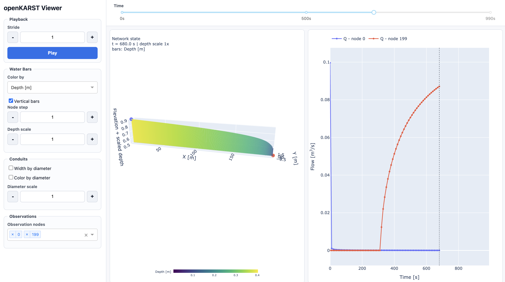
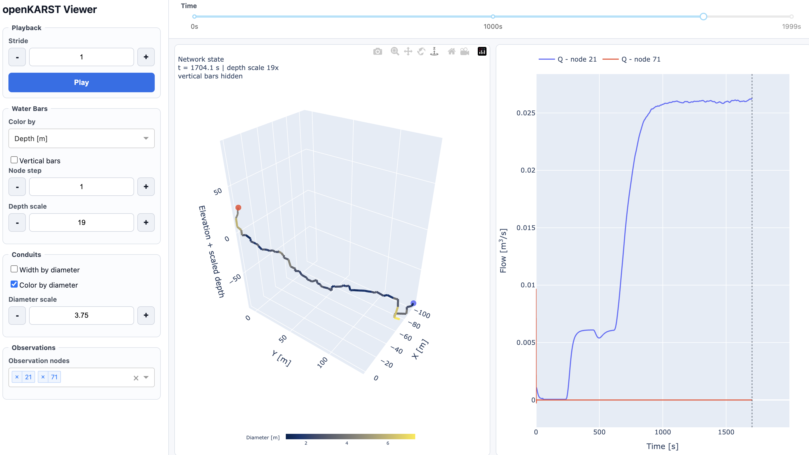
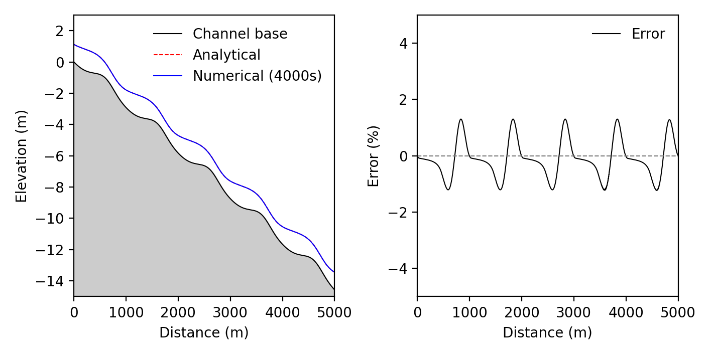
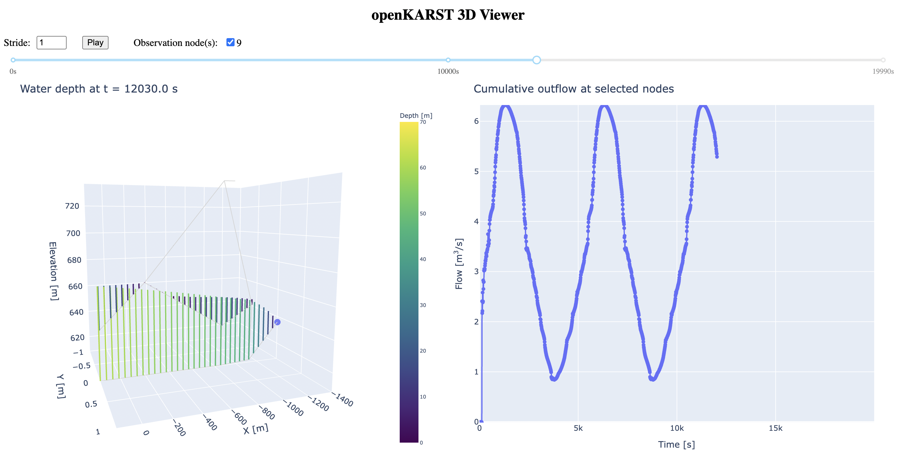

Examples
After cloning, all examples can be found in 'src/openkarst/examples' and can be run from there. Navigate to 'src/openkarst/examples' and use the python commands shown below. Alternatively use your preferred Python IDE (Spyder, PyCharm, VSCode) and run the main files.
Example 1: Basic setup
The first example simulates flow along a linear conduit network with a constant inflow condition and a constant water depths boundary. The results are visualized with the interactive openKARST viewer.
import os
import openpnm as op
import numpy as np
from openkarst.network_generation import compute_conduit_lengths
from openkarst.models import FlowSimulation
from openkarst.visualization.openkarst_viewer import launch_openkarst_viewer
Defining the simulation settings via dictionaries. Note that the order of settings does not matter and missing ones will be replaced by default values.
def main():
# Setup flow simulation parameters
physical_properties = {
'water_density': 1000, # kg/m^3
'gravity': 9.81, # m/s^2
'dynamic_viscosity': 0.001, # Pa.s (kg/m.s)
'geometry_channel': False, # Channel geometry for analytical solutions (Default False)
'channel_type': 'infinite', # 'infinite' for infinitely wide channel, 'finite' for defined width
'channel_width': 1.0, # Width of the channel (only used if channel_type is 'finite')
}
solver_settings = {
'relaxation_factor': 0.6, # Dimensionless
'max_iterations': 20, # Maximum Picard iterations
'picard_depth_tol': 1e-7, # Picard depth tolerance (meters)
'ss_rel_l2tol': 1e-3 # L2 tolerance for steady-state
}
simulation_settings = {
'min_waterdepth': 1e-10, # Minimum water depth (meters)
'min_flowrate': 1e-10, # Minimum flow rate (m^3/s)
'courant': 0.8, # Courant number
'adaptive_timesteps': True, # Use adaptive timestepping
'dt_init': 0.01, # Initial (or constant) timestep (seconds)
'dt_max': 1.0, # Maximum allowable time step
'steady_state': False, # Steady-state (True) or transient (False)
't_max': 1000.0, # Maximum time for transient simulations (seconds)
'print_info_interval': 1000, # Print info every # time steps
}
output_settings = {
'output_interval': 10.0,
'time': True,
'time_step_size': True,
'flowrates': True,
'water_depths': True,
'y_l2_norms': True,
'Q_l2_norms': True,
'convergence_fails': True,
'reynolds_numbers': True,
}
logging_settings = {
'base_dir': os.path.dirname(os.path.abspath(__file__)),
'log_file': 'simulation.log'
}
Now we define a simple 1D network object called cn_geometry and its geometry using the openPNM functionality. The network consists of 200 nodes in X direction with a spacing of 1m. Note that in openPNM all properties are assigned to either throat (conduit) or pore (node). As we currently import openPNM the assignment of properties to either conduits or nodes needs to follow the naming convention (throat.propertyX, pore.propertyY).
We compute the node distances (i.e. conduit lengths) and assign them to a new network object property "throat.lengths". The (constant) diameters and roughness of the conduits are assigned to the network object as "throat.diameters" and "throat.epsilon".
# Create network object using OpenPNM
dl = 1 # Constant spacing between nodes (meters)
cn_geometry = op.network.Cubic(shape=[200, 1, 1], connectivity=6, spacing=dl)
# Compute conduit lengths using the utility function
cn_geometry = compute_conduit_lengths(cn_geometry)
# Assign conduit properties
cn_geometry['throat.epsilon'] = 0.03
cn_geometry['throat.diameters'] = 1.0
Next we create the object flow_network via the FlowSimulation class and set the initial conditions at all nodes and conduits. The FlowSimulation class takes the settings for physical properties, solver settings and simulation settings during creation of the network object. Output settings are directly passed to the run_simulation method of the flow_network object afterwards.
We set constant initial conditions at all nodes and conduits. Note that again the internal openPNM naming convention yields Nt (number of all throats, i.e. conduits) and Np (number of all pores, i.e. nodes) that can be accessed via the geometry object cn_geometry.
# Create flow network object
flow_network = FlowSimulation(cn_geometry,
physical_properties = physical_properties,
solver_settings = solver_settings,
simulation_settings = simulation_settings,
logging_settings = logging_settings)
# Set initial conditions
initial_Q = np.full(cn_geometry.Nt, 0.0, dtype=float) # Initial flows at each conduit (Nt throats)
initial_y = np.full(cn_geometry.Np, 0.01, dtype=float) # Initial water depths at each node (Np pores)
flow_network.set_initial_conditions(initial_Q, initial_y)
Now we set the boundary conditions: a constant volumetric inflow rate at the left side and a constant water depth at the right side. Note that node indexing starts at zero. Both boundaries are defined using lists of node indices and corresponding values, applied via the set_inflow_BC() and set_waterdepth_BC() methods.
# Set boundary conditions
right_nodes = [199]
left_nodes = [0]
flow_rate = 0.1 # Flowrate in m^3/s
water_depth = 0.01 # Water depth in m
# Apply constant inflow at left nodes
flow_network.set_inflow_BC(
nodes=left_nodes,
values=flow_rate,
inflow_type='volumetric'
)
# Apply constant water depth at right nodes
flow_network.set_waterdepth_BC(
nodes=right_nodes,
values=water_depth
)
Finally we set observation points for the viewer, call the run_simulation method, and pass the results to the openKARST viewer.
# Record boundary-node time series for the viewer observation panel
flow_network.set_observation_points(
nodes=left_nodes + right_nodes,
variables=['water_depth', 'connected_abs_flowrate', 'connected_net_flowrate'],
interval=output_settings['output_interval']
)
# Run simulation and store results
results = flow_network.run_simulation(desired_outputs = output_settings)
obs_df = flow_network.get_observation_dataframe()
launch_openkarst_viewer(results, cn_geometry, obs_df)
return results, cn_geometry, obs_df
if __name__ == '__main__':
main()
input("Viewer is running at http://127.0.0.1:8050. Press Enter to stop.\n")

Example 2: Import of a cave network
In this example we import a karst cave network using the new project cave format.
import os
import numpy as np
from openkarst.io import load_cave_data
from openkarst.models import FlowSimulation
from openkarst.visualization.openkarst_viewer import launch_openkarst_viewer
def main():
# Setup flow simulation parameters
physical_properties = {
'water_density': 1000, # kg/m^3
'gravity': 9.81, # m/s^2
'dynamic_viscosity': 0.001, # Pa.s (kg/m.s)
'geometry_channel': False, # Channel geometry for analytical solutions (Default False)
'channel_type': 'infinite', # 'infinite' for infinitely wide channel, 'finite' for defined width
'channel_width': 1.0, # Width of the channel (only used if channel_type is 'finite')
}
solver_settings = {
'relaxation_factor': 0.6, # Dimensionless
'max_iterations': 20, # Maximum Picard iterations
'picard_depth_tol': 1e-4, # Picard depth tolerance (meters)
'ss_rel_l2tol': 1e-3 # L2 tolerance for steady-state
}
simulation_settings = {
'min_waterdepth': 1e-12, # Minimum water depth (meters)
'min_flowrate': 1e-12, # Minimum flow rate (m^3/s)
'courant': 0.8, # Courant number
'adaptive_timesteps': True, # Use adaptive timestepping
'dt_init': 0.01, # Initial (or constant) timestep (seconds)
'dt_max': 0.1, # Maximum allowable time step
'steady_state': False, # Steady-state (True) or transient (False)
't_max': 2000.0, # Maximum time for transient simulations (seconds)
'print_info_interval': 1000, # Print info every # time steps
}
output_settings = {
'output_interval': 1.0,
'time': True,
'time_step_size': True,
'flowrates': True,
'water_depths': True,
'y_l2_norms': True,
'Q_l2_norms': True,
'convergence_fails': True,
'reynolds_numbers': True,
}
logging_settings = {
'base_dir': os.path.dirname(os.path.abspath(__file__)),
'log_file': 'simulation.log'
}
We now pass the file paths of nodes, edges and diameters to load_cave_data(). This will create a networkX graph, generate an openPNM geometry object, assign the diameters to the conduits, and return the openPNM geometry object. We then also assign a constant roughness value to all conduits. Notice the relative import of cave data from the parent folder openkarst/cave_data.
# Get the directory of the current script
current_dir = os.path.dirname(os.path.abspath(__file__))
# Construct the full path to the nodes and conduit files
nodes_file_path = os.path.join(current_dir, '../cave_data/reve_eveille/nodes.csv')
edges_file_path = os.path.join(current_dir, '../cave_data/reve_eveille/edges.csv')
diameters_file_path = os.path.join(current_dir, '../cave_data/reve_eveille/diameters.csv')
# Load cave data
cn_geometry = load_cave_data(nodes_file_path, edges_file_path, diameters_file_path)
# Assign conduit properties
cn_geometry['throat.epsilon'] = 0.03
# Create flow network object
flow_network = FlowSimulation(cn_geometry,
physical_properties = physical_properties,
solver_settings = solver_settings,
simulation_settings = simulation_settings,
logging_settings = logging_settings)
# Set initial conditions
initial_Q = np.full(cn_geometry.Nt, 0.0, dtype=float) # Initial flows at each conduit (Nt throats)
initial_y = np.full(cn_geometry.Np, 0.01, dtype=float) # Initial water depths at each node (Np pores)
flow_network.set_initial_conditions(initial_Q, initial_y)
Now we set the boundary conditions for the inflow node (constant volumetric flow rate) and outlet node (constant water depths). Note that these have been chosen by inspecting the cave network data. In principle node numbers can also be determined from the information stored in the openPNM geometry object, e.g., finding the highest/lowest node, or nodes with coordination number 1.
# Set boundary conditions
outflow_nodes = [21]
inflow_nodes = [71]
flow_rate = 0.01 # Flowrate in m^3/s
water_depth = 0.01 # Water depth in m
# Apply constant volumetric inflow at inflow nodes
flow_network.set_inflow_BC(
nodes=inflow_nodes,
values=flow_rate,
inflow_type='volumetric'
)
# Apply constant water depth at outflow nodes
flow_network.set_waterdepth_BC(
nodes=outflow_nodes,
values=water_depth
)
We then set observation points at the inlet and outlet nodes, run the simulation, and pass the results to the openKARST viewer. The main() function returns the results container, geometry object, and observation dataframe for easier access in a variable explorer of your IDE.
# Record inlet and outlet time series for the viewer observation panel
flow_network.set_observation_points(
nodes=inflow_nodes + outflow_nodes,
variables=['water_depth', 'connected_abs_flowrate', 'connected_net_flowrate'],
interval=output_settings['output_interval']
)
# Run simulation and store results
results = flow_network.run_simulation(desired_outputs = output_settings)
obs_df = flow_network.get_observation_dataframe()
launch_openkarst_viewer(results, cn_geometry, obs_df)
return results, cn_geometry, obs_df
if __name__ == '__main__':
main()
input("Viewer is running at http://127.0.0.1:8050. Press Enter to stop.\n")

Example 3: Comparison with analytical solution
In this example we compare the model with an analytical solution for steady-state 1D flow in a wide open channel (Delestre, 2010). In contrast to the previous examples we do not consider a conduit geometry but an infinitely wide channel (i.e. we neglect friction along the lateral boundaries such that the hydraulic radius is only a function of the flow depth). The channel_width parameter could be omitted when an infinite channel is considered. Instead of computing an equivalent Manning roughness from the epsilon roughness height we directly apply the Manning roughness to all channel segments via the channel_manning parameter.
import os
import openpnm as op
import numpy as np
import matplotlib.pyplot as plt
from matplotlib.collections import LineCollection
from matplotlib.lines import Line2D
import matplotlib.animation as animation
from scipy.interpolate import interp1d
from scipy.integrate import odeint
from openkarst.network_generation import compute_conduit_lengths
from openkarst.models import FlowSimulation
def main():
# Setup flow simulation parameters
physical_properties = {
'water_density': 1000, # kg/m^3
'gravity': 9.81, # m/s^2
'dynamic_viscosity': 0.001, # Pa.s (kg/m.s)
'geometry_channel': True, # Channel geometry for analytical solutions (Default False)
'channel_type': 'infinite', # 'infinite' for infinitely wide channel, 'finite' for defined width
'channel_width': 0.12, # Width of the channel (only used if channel_type is 'finite')
'channel_manning': 0.03, # Constant Manning roughness applied to all channel segments
}
solver_settings = {
'relaxation_factor': 0.6, # Dimensionless
'max_iterations': 20, # Maximum Picard iterations
'picard_depth_tol': 1e-5, # Picard depth tolerance (meters)
'ss_rel_l2tol': 1e-6 # L2 tolerance for steady-state
}
simulation_settings = {
'min_waterdepth': 1e-10, # Minimum water depth (meters)
'min_flowrate': 1e-10, # Minimum flow rate (m^3/s)
'courant': 0.8, # Courant number
'adaptive_timesteps': False, # Use adaptive timestepping
'dt_init': 0.1, # Initial (or constant) timestep (seconds)
'dt_max': 1.0, # Maximum allowable time step
'steady_state': False, # Steady-state (True) or transient (False)
't_max': 4000.0, # Maximum time for transient simulations (seconds)
'print_info_interval': 100, # Print info every # time steps
}
output_settings = {
'output_interval': 10.0,
'time': True,
'time_step_size': True,
'flowrates': True,
'water_depths': True,
'y_l2_norms': True,
'Q_l2_norms': True,
'convergence_fails': True,
'reynolds_numbers': True,
}
logging_settings = {
'base_dir': os.path.dirname(os.path.abspath(__file__)),
'log_file': 'simulation.log'
}
First we create the geometry object, a 5000m long channel with a node spacing of 1m. Notice that we do not explicitly pass the conduit diameters to the geometry object as they are not required for the open channel flow.
# Create network object using OpenPNM
dl = 1 # Constant spacing between nodes (meters)
cn_geometry = op.network.Cubic(shape=[5000, 1, 1], connectivity=6, spacing=dl)
# Compute conduit lengths using the utility function
cn_geometry = compute_conduit_lengths(cn_geometry)
Next we compute the height field z for the channel base for a given water height. We then assign the height information z to the third dimension of the pore.coords property of the geometry object.
# Create a height field according to the analytical steady-state solution (3.3.1.9) from:
# Delestre, O. (2010): Simulation du ruissellement d’eau de pluie sur des surfaces agricoles.
# Mathématiques. Université d’Orléans
# https://theses.hal.science/tel-00531377v1
# Parameters
x = np.linspace(0, 5000, 5000)
g = 9.81 # gravity (m/s^2)
q = 2 # flow rate (m^2/s)
n = 0.03 # Manning's roughness coefficient
water_height = 9/8 + 1/4 * np.sin(np.pi * x / 500)
# ODE function
def dz_dx(z, x):
h = h_interp(x)
# Derivative from Delestre (2010)
dh_dx = (np.pi / 2000) * np.cos(np.pi * x / 500)
return (q**2 / (g * h**3) - 1) * dh_dx - Sf(h)
# Friction slope function
def Sf(h):
return n**2 * q * np.abs(q) / (h**(10/3))
# Interpolate h(x) for the ODE function
h_interp = interp1d(x, water_height, kind='cubic', fill_value="extrapolate")
# Initial condition for z
z0 = [0] # Bed elevation starts at 0
# Solve the ODE with the given dh/dx
z = odeint(dz_dx, z0, x).flatten()
# Assign the heights of the channel to the z-dimension of the geometry object
cn_geometry['pore.coords'][:, 2] = z
Finally we create a FlowSimulation object and set the initial conditions (no flows, empty channel). We also set the inflow boundary at the left side (volumetric inflow) and the constant water depth boundary at the right side (computed from the analytical solution).
# Create flow network object
flow_network = FlowSimulation(cn_geometry,
physical_properties = physical_properties,
solver_settings = solver_settings,
simulation_settings = simulation_settings,
logging_settings = logging_settings)
# Set initial conditions
initial_Q = np.full(cn_geometry.Nt, 0.0, dtype=float) # Initial flows at each conduit (Nt throats)
initial_y = np.full(cn_geometry.Np, 0.0, dtype=float) # Initial water depths at each node (Np pores)
flow_network.set_initial_conditions(initial_Q, initial_y)
# Set boundary conditions
inflow_node = 0
outflow_node = 4999
flow_rate = 2.0 # Flow rate in m^3/s at node 0
water_depth = water_height[4999] # Water depth at node 4999
# Apply constant volumetric inflow
flow_network.set_inflow_BC(
nodes=inflow_node,
values=flow_rate,
inflow_type='volumetric'
)
# Apply constant water depth at the outflow
flow_network.set_waterdepth_BC(
nodes=outflow_node,
values=water_depth
)
# Run simulation and store results
results = flow_network.run_simulation(desired_outputs = output_settings)
return cn_geometry, results, water_height
In the following we obtain the geometry object, the results container and the analytical water height from the main function and animate the transient dynamics until steady-state is reached. We also modify the current directory to save the figure to the current directory where the example is run.
if __name__ == '__main__':
script_dir = os.path.dirname(os.path.abspath(__file__))
os.chdir(script_dir)
cn_geometry, results, water_height = main()
######################################################################
############## Animation of solution ######################################
######################################################################
# Get arrays from results container
Q_history = results['flowrates']
y_history = results['water_depths']
t_history = results['time']
# Compute hydraulic head
H_history = cn_geometry['pore.coords'][:, 2] + y_history
plt.rcParams['font.size'] = 10
width_cm = 18
height_cm = 10
width_in = width_cm / 2.54
height_in = height_cm / 2.54
fig, ax = plt.subplots(figsize=(width_in, height_in))
distances = np.arange(len(H_history[0]))
lc = LineCollection([], colors='blue', lw=1) # Empty line collection
ax.add_collection(lc) # Add the collection to the axes
def init():
ax.set_xlim(0, 5000)
ymin, ymax = -15.0, 3.0
ax.set_ylim(ymin, ymax)
base = cn_geometry['pore.coords'][:, 2]
# Draw the static and analytical lines first with a lower zorder
ax.plot(distances, base, color='black', lw=0.8, zorder=1)
ax.plot(distances, base + water_height, color='red', lw=0.8, linestyle='dotted', zorder=2)
ax.fill_between(distances, ymin, base, color=(0.8, 0.8, 0.8), zorder=0)
# Proxy element for the numerical solution
numerical_line = Line2D([0], [0], color='blue', lw=1, label='Numerical solution')
# Add all legend entries
legend_entries = [
Line2D([0], [0], color='black', lw=0.8, label='Static boundary'),
Line2D([0], [0], color='red', lw=0.8, linestyle='dotted', label='Analytical solution'),
Line2D([0], [0], color='blue', lw=0.8, label='Numerical solution')
]
# Set axis labels
ax.set_xlabel('Distance (m)')
ax.set_ylabel('Elevation (m)')
# Add the legend without the box
ax.legend(handles=legend_entries, loc='upper right', frameon=False)
return [lc]
def update(frame):
head = H_history[frame]
points = np.array([distances, head]).T.reshape(-1, 1, 2)
segments = np.concatenate([points[:-1], points[1:]], axis=1)
lc.set_segments(segments)
lc.set_zorder(3) # Ensure the blue line is on top
ax.set_title(f'Time: {t_history[frame]:.1f} (s)')
return [lc]
update_interval = 1 # plot every x steps
ani = animation.FuncAnimation(fig,
update,
frames=range(0, len(H_history),
update_interval),
init_func=init,
blit=False,
repeat=False)
Lastly we plot the numerical and analytical solution and the corresponding errors along the channel under steady-state conditions (at 4000s).
######################################################################
############## Plot solution and error ###############################
######################################################################
distances = np.arange(len(H_history[0]))
base = cn_geometry['pore.coords'][:, 2]
head_numerical = H_history[-1] # Last time step's hydraulic head data
#head_numerical2 = H_history[10000] # Last time step's hydraulic head data
head_analytical = base + water_height # Analytical solution
# Calculate error
depth_numerical = head_numerical - base
percent_error = ((depth_numerical - water_height) / water_height) * 100
width_cm = 18
height_cm = 9
# Convert centimeters to inches
width_in = width_cm / 2.54
height_in = height_cm / 2.54
# Creating figure and subplots
fig, (ax1, ax2) = plt.subplots(1, 2, figsize=(width_in, height_in))
# Plotting the last time step on the first subplot
ax1.set_xlim(0, 5000)
ymin, ymax = -15.0, 3.0
ax1.set_ylim(ymin, ymax)
ax1.plot(distances, base, 'black', lw=0.75, label='Channel base')
ax1.plot(distances, head_analytical, 'r--', lw=0.75, label='Analytical')
ax1.plot(distances, head_numerical, 'b', lw=0.75, label='Numerical (4000s)')
ax1.fill_between(distances, ymin, base, color=(0.8, 0.8, 0.8))
ax1.set_xlabel('Distance (m)')
ax1.set_ylabel('Elevation (m)')
ax1.legend(loc='upper right', frameon=False)
spine_linewidth = {spine: ax1.spines[spine].get_linewidth() for spine in ax1.spines}
# Print the linewidth of each spine
print("Linewidth of axes spines:", spine_linewidth)
# Plotting the error
ax2.set_xlim(0, 5000)
ax2.set_ylim(-5, 5)
ax2.plot(distances, percent_error, color='black', lw=0.75, label='Error')
ax2.axhline(0, color='gray', lw=0.8, ls='--') # Adding a line at y=0 for reference
ax2.set_xlabel('Distance (m)')
ax2.set_ylabel('Error (%)')
ax2.legend(frameon=False)
plt.tight_layout()
plt.show()
fig.savefig('analytical_solution.eps', format='eps', bbox_inches='tight')

Boundary Conditions
openKARST supports flexible and time-dependent boundary conditions through an object-oriented interface. Boundary conditions can be applied at any node as either:
- Inflow boundary conditions (volumetric or flux-based), or
- Water depth boundary conditions (e.g. constant depth or time-dependent)
These conditions are handled via the methods:
set_inflow_BC(nodes, values, inflow_type='volumetric', ...)set_waterdepth_BC(nodes, values, ...)
Supported inflow types
For inflow boundaries one can choose between:
'volumetric': flow rate in m³/s'flux': area-normalized rate in m/s (currently only supported for channel-type geometries)
Supported formats
For both inflow and water depth, the following formats are supported for values:
- A float: applies a constant value over time.
- A tuple:
('box', value, t_start, t_end [, value_before=0.0, value_after=0.0]): step function.('timeseries', times, values): interpolated time series (with optionalextrapolatebehavior).
Example: Constant inflow at single or multiple nodes
# Constant volumetric inflow at node 10 (0.01 m³/s)
flow_network.set_inflow_BC(nodes=10, values=0.01)
# Multiple constant inflows (m³/s)
flow_network.set_inflow_BC(
nodes=[10, 15, 26],
values=[0.1, 0.5, 0.3],
inflow_type='volumetric'
)
Example: Time-dependent inflow (box, timeseries)
# Ramping inflow between t=0 and t=200 s with time series BCs
times = [0, 200]
flow_network.set_inflow_BC(
nodes=[100, 101, 102],
values=[
('timeseries', times, [0.01, 0.05]),
('timeseries', times, [0.02, 0.03]),
('timeseries', times, [0.015, 0.025])
]
)
# Time series inflow
times = [0, 50, 100, 200]
values = [0.0, 0.03, 0.06, 0.02]
flow_network.set_inflow_BC(
nodes=50,
values=('timeseries', times, values),
extrapolate='zero'
)
# Box inflow: 0.04 m³/s between t=100 and t=300, zero otherwise
flow_network.set_inflow_BC(
nodes=20,
values=('box', 0.04, 100, 300)
)
Water depth boundary conditions
# Constant water depth boundary (e.g., 0.01 m) at nodes
flow_network.set_waterdepth_BC(
nodes=[0, 26],
values=[0.01, 0.2]
)
# Time-dependent water depth via box profile
flow_network.set_waterdepth_BC(
nodes=5,
values=('box', 0.2, 100, 500, 0.0, 0.0)
)
Notes
- Boundary conditions are stored in
flow_network.boundary_conditionsunder['inflow']and['waterdepth']. - You can overwrite existing BCs using
mode='overwrite'or remove them withmode='remove'. - All time-dependent BCs support clean handling via object-oriented classes (
ConstantBC,BoxBC,TimeSeriesBC) and can be extended for more complex logic if needed.
Observation nodes
You can track simulation variables over time at specific nodes by setting observation points.
Use the method:
nodes: A single node or list of node indices to monitor.variables: List of variables to observe. Supported values:'water_depth': records water depth at each node.'connected_abs_flowrate': records the sum of absolute flowrates through conduits connected to each node. This is useful as a flow-activity measure.'connected_net_flowrate': records the signed net flowrate into each node from its connected conduits. Positive values mean net flow into the node; negative values mean net flow out of the node.'concentrations': records concentration at each node when transport is enabled.'mass': records mass at each node when transport is enabled.interval: Time interval (in seconds) between two recordings. Default is1.0.
Example:
# Record water depth and connected conduit flowrates at nodes 0 and 10 every 2 seconds
flow_network.set_observation_points(
nodes=[0, 10],
variables=['water_depth', 'connected_abs_flowrate', 'connected_net_flowrate'],
interval=2.0
)
After the simulation, data can be exported to a pandas.DataFrame:
This will contain columns:
- time
- node
- Any variables being recorded (water_depth, connected_abs_flowrate,
connected_net_flowrate, etc.)
You can then plot or export this data for analysis.
Notes:
- The recorder does not currently support conduit-based variables (e.g., Reynolds numbers).
Exporting to VTK
With the VtkDataExporter class simulation results can be exported to VTK files, which can be used for advanced visualization and post-processing in tools like ParaView. The following example demonstrates how to use the VtkDataExporter class to save the flow rates, water depths, and time history data to VTK files. In addition the conduit roughness and diameters are obtained from the geometry object and exported to the VTK files:
from openkarst.io.vtk_data_exporter import VtkDataExporter
# Run simulation and store results
results = flow_network.run_simulation(desired_outputs = output_settings)
# Get arrays from results container
Q_history = results['flowrates']
y_history = results['water_depths']
t_history = results['time']
# Save VTK files to a specified directory within the current working directory
output_dir = os.path.join(os.getcwd(), 'vtk_output')
# Create an instance of the VTKExporter
vtk_exporter = VtkDataExporter(output_dir)
# Export the results
vtk_exporter.export(cn_geometry, Q_history, y_history, t_history)
Visualization with the openKARST 3D Viewer
openKARST includes a built-in 3D viewer using Dash/Plotly to visualize simulation results interactively in the browser. This tool allows for quick inspection of flowrates, water depths, and other simulation outputs over time.
Launching the Viewer
After setting up and running a simulation, you can launch the 3D viewer as follows:
from openkarst.visualization.openkarst_viewer import launch_openkarst_viewer
# Set observation point to track connected conduit flowrates at node 21 (outlet)
flow_network.set_observation_points(
nodes=[21],
variables=['connected_abs_flowrate', 'connected_net_flowrate'],
interval=1.0 # record every simulated second
)
# Run the simulation
results = flow_network.run_simulation(desired_outputs=output_settings)
# Get observations at node 21 as a DataFrame
obs_df = flow_network.get_observation_dataframe()
# Launch the interactive viewer. This should open a browser window.
launch_openkarst_viewer(results, cn_geometry, obs_df)
Features
- Interactive 3D rendering of the network
- Playback controls for transient results
- Visualization of water depths, flowrates, and other selected outputs
- Synchronization with observation time series
